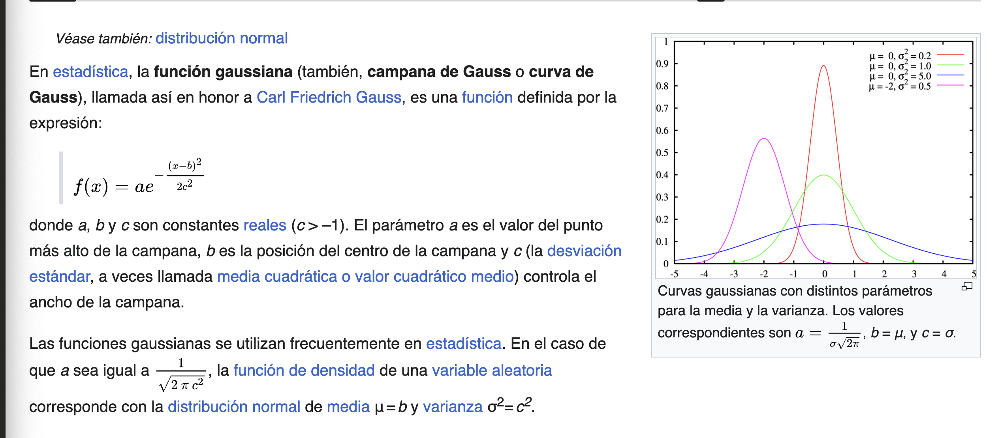
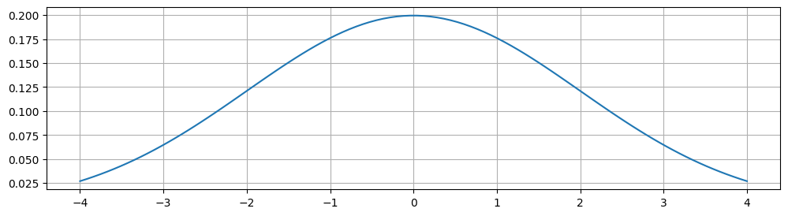
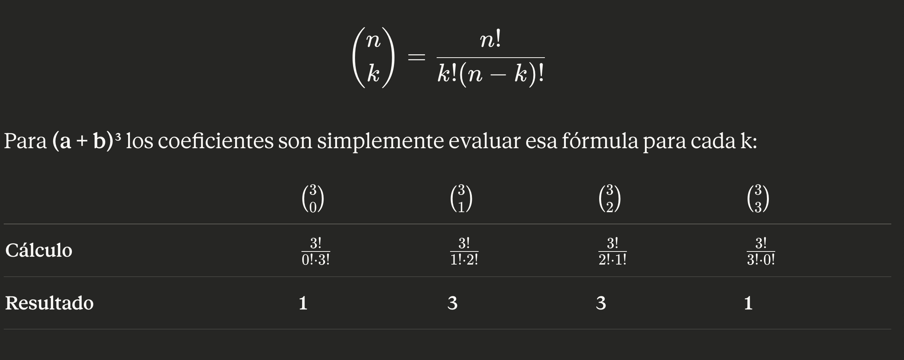
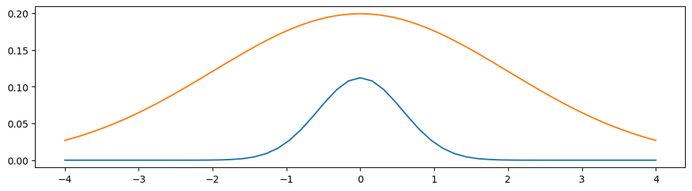

import numpy as np
import matplotlib.pyplot as plt
import math3 norm_x = exponente/2/4

def gaussiana(x,mu=0, sigma=2):
coeficiente = 1. / (sigma * np.sqrt(2 *np.pi))
exponente = -0.5 * ((x - mu) / sigma) ** 2
gauss = coeficiente*np.exp(exponente)
return gaussfig, ax = plt.subplots(figsize=(12,3))
x = np.linspace(-4,4,100)
funcion = gaussiana(x)
ax.plot(x, funcion)
ax.grid()

def constante(exponente, coeficiente):
return math.factorial(exponente)/(math.factorial(coeficiente) * math.factorial(exponente-coeficiente))
exponente = 6
def renglon(exponente):
return np.array([constante(exponente,coeficiente) for coeficiente in range(exponente+1)])
renglon(exponente)array([ 1., 6., 15., 20., 15., 6., 1.])*fig, ax = plt.subplots(figsize=(12,3))
exponente = 50
x = np.linspace(-4, 4, 51)
resultado = renglon(exponente)
resultado = resultado/sum(resultado)
# ax.bar(range(len(resultado)) , resultado)
ax.plot(x,resultado)
# ax.bar(x,resultado,alpha=0.1)
# ax.plot(resultado)
x = np.linspace(-4,4,100)
funcion = gaussiana(x)
ax.plot(x, funcion)
resultadoarray([3.55271368e-15, 1.77635684e-13, 4.35207426e-12, 6.96331881e-11,
8.18189960e-10, 7.52734763e-09, 5.64551073e-08, 3.54860674e-07,
1.90737612e-06, 8.90108858e-06, 3.64944632e-05, 1.32707139e-04,
4.31298201e-04, 1.26071782e-03, 3.33189709e-03, 7.99655302e-03,
1.74924597e-02, 3.49849195e-02, 6.41390190e-02, 1.08023611e-01,
1.67436597e-01, 2.39195139e-01, 3.15302683e-01, 3.83846744e-01,
4.31827587e-01, 4.49100691e-01, 4.31827587e-01, 3.83846744e-01,
3.15302683e-01, 2.39195139e-01, 1.67436597e-01, 1.08023611e-01,
6.41390190e-02, 3.49849195e-02, 1.74924597e-02, 7.99655302e-03,
3.33189709e-03, 1.26071782e-03, 4.31298201e-04, 1.32707139e-04,
3.64944632e-05, 8.90108858e-06, 1.90737612e-06, 3.54860674e-07,
5.64551073e-08, 7.52734763e-09, 8.18189960e-10, 6.96331881e-11,
4.35207426e-12, 1.77635684e-13, 3.55271368e-15])